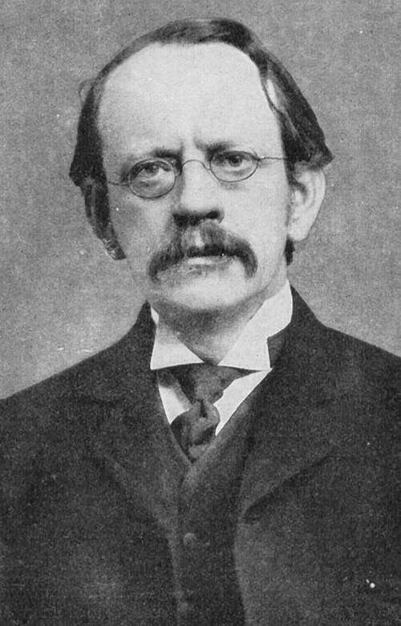

Masa del electrón
Medida Símbolo: mₑ
Incertidumbre estándar: 0,000 000 0028 × 10-31 kg
Personas e ideas
Hito histórico: 1897 · identificación del electrón
J. J. Thomson midió la relación carga/masa en rayos catódicos. Determinar la masa absoluta requirió conocer la carga. El valor moderno procede de medidas de alta precisión y de un ajuste de constantes.

Los retratos anteriores a la fotografía son pinturas o grabados; los créditos identifican su procedencia. La fecha del hito no es necesariamente la de la primera medición precisa.
Dónde aparece
Si su valor cambiara
A α, ℏ y c fijos, mₑ × 2 reduce el radio de Bohr a la mitad y duplica las energías atómicas. La razón mₑ/mp influye en las escalas vibracionales moleculares. No existe un umbral de colapso basado únicamente en mₑ en kilogramos.
Trampa de Penning y factor g de carbono hidrogenoide
Año: 2014
Autores: S. Sturm, F. Köhler, J. Zatorski, A. Wagner, Z. Harman, G. Werth, W. Quint, C. H. Keitel y K. Blaum.
Sven Sturm: retrato reutilizable no disponible en esta edición.
Resultado publicado
me = 0,000 548 579 909 067(14)(9)(2) u
Error o incertidumbre: Tres contribuciones publicadas: 14, 9 y 2 en las últimas cifras; la última es teórica. Se conserva la descomposición original.
Cómo se realizó
- Confinar un ion ¹²C⁵⁺ en una trampa de Penning.
- Comparar la frecuencia ciclotrón del ion con la frecuencia de precesión de su único electrón.
- Combinar ese cociente con el factor g ligado calculado por electrodinámica cuántica.
Fuentes de la ficha
- Publicación del experimento o fuente histórica
- CODATA 2022 · valores, ajuste y correlaciones
- Sistema Internacional · definiciones
Consulta editorial: 28 de septiembre de 2026. El experimento elegido es representativo; no se presenta como la única medición ni necesariamente como la más reciente.